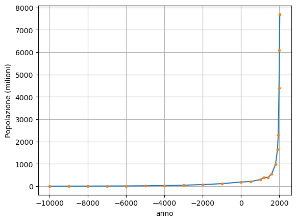
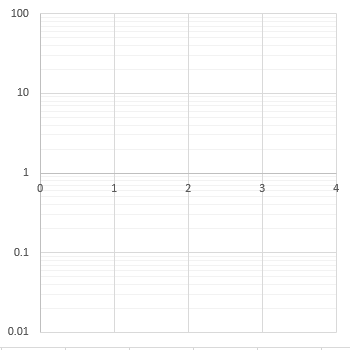
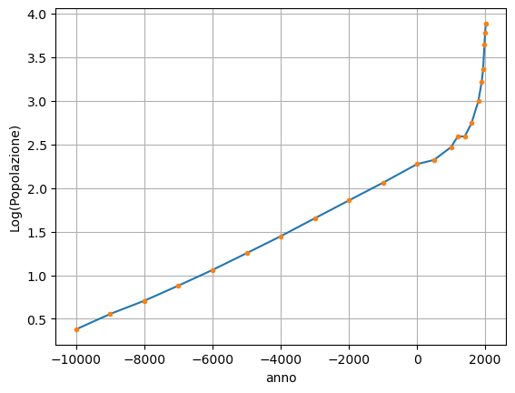
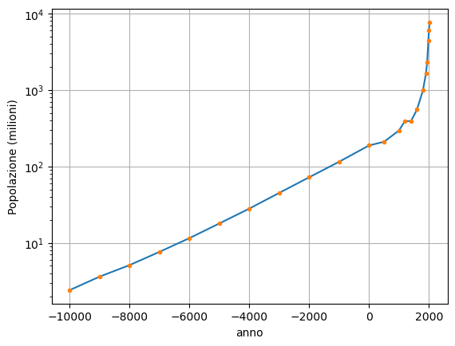
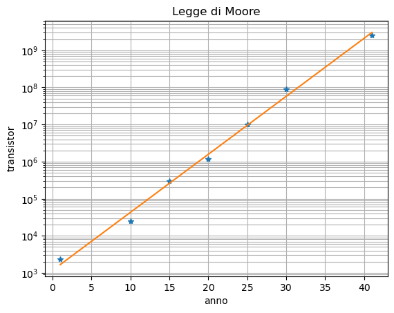

Grafici in scala semilogaritmica
La tabella sotto riporta una stima della popolazione umana nella storia a partire dal 10000 a.C. fino ad oggi (fonte Our World in Data ).
| Anno | Popolazione (milioni di persone) |
| 10000 a.C. | 2,4 |
| 9000 a.C. | 3,6 |
| 8000 a.C. | 5,1 |
| 7000 a.C. | 7,6 |
| 6000 a.C. | 11,5 |
| 5000 a.C. | 17,9 |
| 4000 a.C. | 28 |
| 3000 a.C. | 45 |
| 2000 a.C. | 72 |
| 1000 a.C. | 115 |
| 1 d.C. | 188 |
| Anno | Popolazione (milioni di persone) |
| 500 | 210 |
| 1000 | 295 |
| 1200 | 393 |
| 1400 | 390 |
| 1600 | 554 |
| 1800 | 990 |
| 1900 | 1650 |
| 1940 | 2300 |
| 1980 | 4400 |
| 2000 | 6100 |
| 2020 | 7700 |
Rappresentiamo i dati in un grafico cartesiano in modo da poterli analizzare in modo intuitivo. Se rappresentiamo i dati in un grafico cartesiano ordinario (consideriamo negative le date a.C.) otteniamo il risultato in figura:

Il grafico è corretto ma non permette di cogliere molti aspetti della dinamica della popolazione mondiale: il fatto di dover rappresentare in ordinata valori fino a 7700 milioni ci costringe a scegliere una scala in cui i valori fino ad alcune decine di milioni non sono distinguibili. Dal grafico la popolazione sembra essere rimasta costante fino al 3000 a.C., mentre in realtà è aumentata di 20 volte!
Per rappresentare dati che differiscono di diversi ordini di grandezza, senza che i dati con valori piccoli risultino graficamente indistinguibili, possiamo utilizzare una scala logaritmica.
Rappresentiamo cioè in un grafico cartesiano il valore del logaritmo decimale della quantità che ci interessa. Per facilitare la lettura del grafico, però, indicheremo sull’asse il valore della quantità originale.
Poiché \( \log 1 = 0 \), \( \log10=1\), \( \log100=2\), \( \log1000=3 \) sull’asse i valori 1, 10, 100, 1000 ecc… risulteranno alla stessa distanza: la scala si contrae man mano che i valori aumentano. Lo stesso vale anche per valori minori di 1: \( \log 0,1=-1\),\( \log 0,01=-2 \) ecc…

In questo caso utilizzeremo una scala logaritmica solo per le ordinate (questo tipo di grafico è detto anche semi-logaritmico). Calcoliamo dunque il logaritmo decimale della popolazione costruendo una terza colonna della tabella:
| Anno | Popolazione (milioni di persone) |
\( \log P \) |
| 10000 a.C. | 2,4 | 0,4 |
| 9000 a.C. | 3,6 | 0,6 |
| 8000 a.C. | 5,1 | 0,7 |
| 7000 a.C. | 7,6 | 0,9 |
| 6000 a.C. | 11,5 | 1,1 |
| 5000 a.C. | 17,9 | 1,3 |
| 4000 a.C. | 28 | 1,4 |
| 3000 a.C. | 45 | 1,7 |
| 2000 a.C. | 72 | 1,9 |
| 1000 a.C. | 115 | 2,1 |
| 1 d.C. | 188 | 2,3 |
| Anno | Popolazione (milioni di persone) |
\( \log P \) |
| 500 | 210 | 2,3 |
| 1000 | 295 | 2,5 |
| 1200 | 393 | 2,6 |
| 1400 | 390 | 2,6 |
| 1600 | 554 | 2,7 |
| 1800 | 990 | 3,0 |
| 1900 | 1650 | 3,2 |
| 1940 | 2300 | 3,4 |
| 1980 | 4400 | 3,6 |
| 2000 | 6100 | 3,8 |
| 2020 | 7700 | 3,9 |
Possiamo rappresentare i dati con l’anno in ascissa e il logaritmo della popolazione in ordinata:

Per leggere più facilmente i valori effettivi della popolazione indichiamo ora sull’asse delle ordinate direttamente il valore della popolazione stessa:

Le linee orizzontali della griglia corrispondono ai valori di y (la popolazione) pari a 2, 3, 4, 5, 6, 7, 8, 9 tra le linee 1 e 10, a 20, 30, 40, 50, 60, 70, 80, 90 tra 10 e 100 e così via. Da questa griglia è possibile osservare chiaramente come la distanza grafica tra i valori diminuisca man mano che i valori aumentano. Per esempio osserviamo che la linea corrispondente a 3 è circa a metà tra 1 e 10, perché Log 1=0, Log 3≈0,5, Log 10=1. Analogamente la linea corrispondente a 30 è circa a metà tra 10 e 100 perché Log 30≈1,5, Log 100=2.
I fogli elettronici, i linguaggi di programmazione come Python e altri programmi per creare grafici a partire dai dati permettono di costruire il grafico in scala logaritmica direttamente, anche senza prima calcolare separatamente il valore del logaritmo dei dati.
Nel grafico ottenuto in questo modo è possibile osservare anche la variazione di popolazione nei primi millenni a partire dal 10000 a.C.. Analizziamo alcune caratteristiche del grafico in scala logaritmica:
- Fino circa all’anno 1 i dati stanno approssimativamente su di una retta; vedremo nel problema 3 che questo indica una crescita esponenziale, cioè una crescita a ritmo costante (ogni anno la popolazione cresce della stessa percentuale).
- Si osservano due momenti di stasi della crescita: nei primi secoli d.C. e attorno al XIII-XIV secolo d.C. , quest’ultimo legato all’epidemia di peste in Europa.
- Negli ultimi sei secoli la rapidità di crescita è aumentata rapidamente. Solo da circa il 1963 la crescita ha cominciato a rallentare, ma questo dato non si osserva nel grafico perché sarebbe necessario studiare i dati dell’ultimo secolo nel dettaglio
Dal grafico alla legge
Se i dati rappresentati in scala semilogaritmica sono allineati su di una retta, qual è il legame tra le due grandezze?
Consideriamo un esempio. La seguente tabella riporta il numero di transistor integrati nelle CPU dei computer nel corso degli anni.
| Anno | 1971 | 1980 | 1985 | 1990 | 1995 | 2000 | 2011 |
| n. Transistor | 2300 | 25000 | 300000 | 1200000 | 10000000 | 90000000 | 2600000000 |
Il numero di transistor varia di 6 ordini di grandezza, quindi è opportuno rappresentarlo con una scala logaritmica.
Per semplicità contiamo gli anni a partire dal 1970, quindi riscriviamo la tabella come segue
| Anno | 1 | 10 | 15 | 20 | 25 | 30 | 41 |
| n. Transistor | 2300 | 25000 | 300000 | 1200000 | 10000000 | 90000000 | 2600000000 |
| Log (n. Trans) | 3,4 | 4,4 | 5,5 | 6,1 | 7 | 9,9 | 14,1 |
Otteniamo il grafico:

I punti che rappresentano i dati sono quasi perfettamente allineati lungo una retta che passa per i due punti estremi. Poiché il grafico è semilogaritmico, questo significa che c’è una relazione lineare tra il logaritmo di \( y \) e \( x \): $$ \log y = m x + q $$ Per ottenere la relazione esplicita tra \( y \) e \( x \) poniamo entrambi i membri dell’uguaglianza come esponenti a 10: $$ 10^{\log y} = 10^{m⋅ x + q} \rightarrow y = 10^{m⋅x}⋅10^q = y_0⋅10^{m⋅x} $$ dove abbiamo posto \( y_0 = 10^q \).
In conclusione:
Se la relazione tra due grandezze è rappresentata da una retta in un grafico semilogaritmico l’equazione della relazione è espressa da una legge esponenziale, del tipo $$ y= y_0⋅10^{m⋅x} $$ dove l’esponente \( m \) rappresenta il coefficiente angolare della retta. Date due coppie di valori \( m \) si può calcolare da $$ m = \frac{\log y_B-\log y_A}{ x_B- x_A } $$ Ottenuto \( m \), il coefficiente \( y_0 \) si può ottenere da uno dei dati esplicitando dalla relazione: $$ y_0 = \frac{y_A}{10^{m⋅x_A}} $$ Il valore di \( y_0 \) è il valore di \( y \) in corrispondenza di \( x=0 \).Nel nostro caso:
$$ m = \frac{ \log(2.6⋅10^9 )- \log 2300}{41-1} \simeq 0.15 $$ $$ y_0 = \frac{2300}{10^{0.15⋅1}} \simeq 1600 $$ e la legge si può scrivere $$ y = 1600 \cdot 10^{0.15⋅x} $$